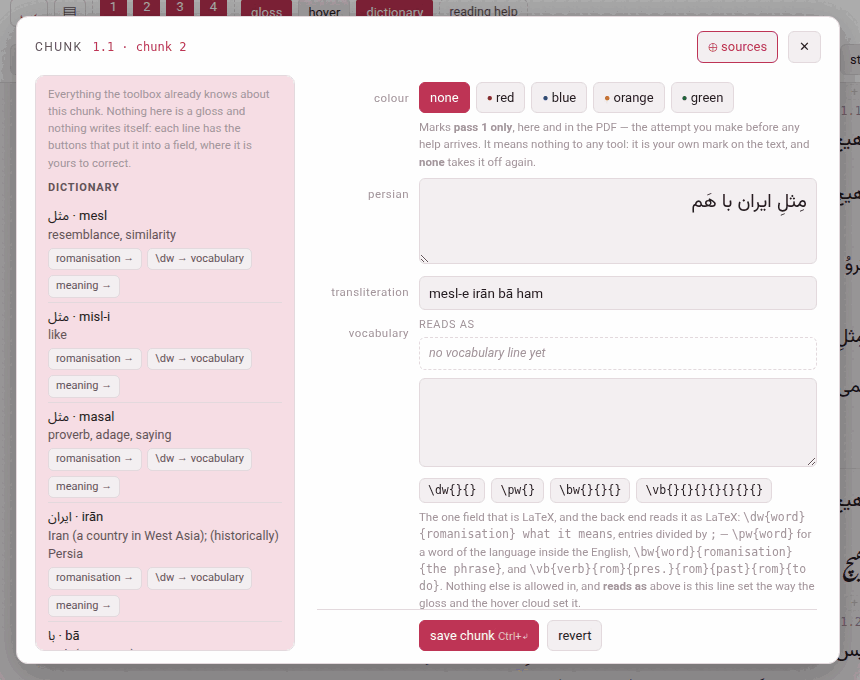

Writing a chunk
Writing is always on in the reader: there is no editing mode to enter. A chunk opens for writing from its pencil, and what you save is written straight back into the chapter file the book is built from.
1. The pencil#
- In hover mode, ✎ edit in the chunk’s gloss cloud.
- Anywhere else — the chunk rows, or any pass with hover mode off — a small ✎ appears at the corner of the chunk under the pointer (on a touch screen, the chunk last tapped).
- E opens whichever of the two the chunk under the pointer has.
A click on the chunk itself still does what it always did — it plays, or opens the cloud — and so do the modifier-clicks (Alt makes a card, Shift copies), so the narration stays within reach while you write.
2. The chunk sheet#
The sheet shows the chunk as the chapter file holds it, not as the page shows it. That matters in one field, and is the reason the sheet exists: the gloss you read is the rendering of the vocabulary line, and the line itself is what you edit. Its head names the chunk (1.1 · chunk 2), with ⊕ sources (Reading a book nobody has glossed) and ✕.

| Row | What it holds |
|---|---|
| colour | none, red, blue, orange or green (below) |
| the language (persian, japanese…) | the chunk’s text. Plain text. The one field that can be refused for reasons outside the chunk (below). |
| words | Japanese and Chinese: the division of the text into words, with each word’s reading — the words strip (below) |
| kana | Japanese only: the reading of the whole chunk |
| the transliteration | named as the language names it: transliteration for Persian, Arabic and Hindi, rōmaji for Japanese, pinyin for Chinese, pronunciation for the Latin-script languages. Plain text. |
| vocabulary | the one field that is LaTeX (below), with reads as above the box: the line set exactly as the gloss and the cloud set it |
| the gloss language (english…) | what the chunk means. Plain text, typed in the gloss language’s direction. It is called meaning in a book glossed in the language it teaches, where two rows both called english would say of neither which is which. |
| the source | the checkbox this paragraph need not reproduce source/paras/ (below) |
| where it ends | cut this chunk in two…, join it to the next…, join the previous to it… — Cutting and joining chunks |
| an LLM | gloss around here with an LLM… — the sheet that has an LLM gloss a stretch, opened on this chunk’s subparagraph: Glossing a stretch with an LLM |
A chunk nobody has glossed yet opens like any other, its gloss boxes empty for you to fill — one at a time, if you like: a meaning saved before its transliteration is saved as it is. A \chp — a chunk with no gloss slots at all, a colour and its text, written that way in the chapter file (What a book is made of) — opens with only those two rows, and says so.
save chunk (Ctrl+↵) sends only the fields you changed. revert puts the boxes back to what the file holds. delete gloss, beside them, takes the whole gloss off (below). Esc, ✕ or a click outside close the sheet without saving; the narration, paused while it is open, plays on.
Deleting a gloss#
delete gloss empties the chunk’s transliteration, vocabulary and meaning — and its reading, in Japanese — and saves at once. It asks nothing first, because it can be undone. The text, the colour and the word line stay; what is left is a chunk with no gloss, the same macro with its gloss slots empty. In Japanese and Chinese that is one step emptier than a chunk nobody has touched: a drafted chunk holds the reading proposed from its words (the kana, or the pinyin), and delete empties the reading rather than put that proposal back. The sheet says gloss deleted, and an undo delete button appears: it writes the deleted gloss back, down the same route as a save.
The page keeps the deleted gloss until it is reloaded, not longer: close the sheet, open the same chunk again later, and undo delete is still there; reload the reader, and it is gone. The button is not offered on a \chp, which has no gloss, and is greyed out on a chunk that has none as saved — a reading that still says exactly what its words propose is none.
It is how a gloss is written again from nothing — by you, or by an LLM: a deleted gloss counts as no gloss, so the next prompt of gloss around here with an LLM… asks for this chunk, and the answer may fill it (Glossing a stretch with an LLM). It is also the one way to empty a box the language requires: on its own, that is refused (below).
The vocabulary line#
The vocabulary line is LaTeX, and only this much of it: entries divided by ;, and four macros, which the four buttons under the box insert with their braces in place and the cursor in the first one.
| Button | Writes | Is |
|---|---|---|
| \dw{}{} | \dw{word}{romanisation} what it means | a dictionary word: two groups, then free text |
| \pw{} | \pw{word} | a word of the language inside the gloss, kept the right way round |
| \bw{}{}{} | \bw{word}{romanisation}{the phrase} | the base of a compound: three groups |
| \vb{}{}{}{}{}{}{} | \vb{verb}{rom}{form2}{rom}{form3}{rom}{meaning} | a verb with its principal parts: seven groups |
What the three forms of a \vb are is the language’s own, and the button’s tooltip says which:
| Language | The three forms |
|---|---|
| Persian | infinitive · present stem · past stem |
| Arabic | perfect · imperfect · masdar |
| Japanese | dictionary form · -masu stem · -te form |
| Italian, French | infinitive · first person present · past participle |
| Spanish | infinitive · first person present · third person preterite |
| German | infinitive · preterite · past participle |
| Turkish | infinitive · present in -iyor · aorist |
| English | plain form · past · past participle |
| Hindi | infinitive · stem · perfective |
| Chinese | verb · the split form (a separable verb only) · the can’t form (a verb with a complement only) |
A form that is left empty is not printed at all. Beyond the four macros, \textit, \emph and \nobreak are allowed, and nothing else spelled with letters.
⊕ sources fills whole entries in from the dictionary, the right macro and all (Reading a book nobody has glossed).
3. The four colours#
red, blue, orange, green — a chunk carries at most one, and none takes it off.
What they do. A colour reaches pass 1 only — the whole sentence, before the chunks and their glosses — on screen and in the printed PDF alike. Pass 1 is your own first attempt at the passage, made before any help arrives, and a mark in the chunks or the bare pass would give the answer away.
What they do not. Nothing else at all. No tool reads a colour, no card carries one, no page filters by one: it is your own mark on the text — this is the word I did not know, this is the construction I keep missing. In the chapter file a colour is the chunk’s first argument, \Cred, \Cblue, \Corange or \Cgreen.
4. What happens when you save#
- The chunk is checked (the refusals below), and the one chunk is rewritten in its chapter file. Nothing else in the file is touched: your comments, your blank lines, a vocabulary line you broke over two lines — every byte outside that one chunk stays as it was. The one exception is the edit’s own: when the opening words of a paragraph change, the paragraph’s entry in the contents follows them.
- The reader is rebuilt at once — a fraction of a second — and the page takes the changed chunk from the new build, so the colour and the vocabulary look exactly as they will on the next reload. The answer says saved en, voc into ch1.tex.
- The PDF is not rebuilt, and the header says so: PDF behind the text — build it. Click it, or build PDF, to build it on the server.
- Under the answer, in grey, is the check of the whole paragraph against its source: ok: paragraph 3 still reproduces source/paras/ch1_p02.txt, or why it could not be checked. That is news about the chapter rather than about the button you pressed, which is why it is set apart. Warnings, if any, follow it.
5. What it refuses#
A refused edit writes nothing: the file is byte for byte as it was, and the sentence you are shown names the rule. Each begins with where the chunk is (ch1.tex:12 chunk 3:); these are the ones you will meet.
| It says | Which means |
|---|---|
| ’purple’ is not a colour — the four are red, blue, orange, green, or ‘’ for none | there are four and no fifth: a colour must mean the same thing in the book’s LaTeX, in the reader and in the video player |
| en may not contain ‘%’ — LaTeX reads it as an instruction … | none of \ { } $ % & # _ ^ ~ may go into the text, the reading, the transliteration or the meaning. They are refused rather than escaped, because no spelling of them satisfies the PDF, the checker and the reader at once. Take the character out, or spell it in words. |
| voc may not use \foo — the gloss macros are \bw, \dw, \emph, \nobreak, \pw, \textit, \vb | the vocabulary line is LaTeX, but only that much of it |
| \vb needs 7 arguments and has 5 | a macro is short of braces; the buttons insert them for you |
| voc leaves 1 brace open | a brace is not closed — which would swallow the arguments after it |
| a glossed chunk needs its meaning — check_batch.py calls an empty en an error; emptying every box of the gloss at once (“delete gloss”) takes the whole gloss off | you emptied, on its own, a field the language requires, which would leave a finished gloss half finished. The same goes for the transliteration where the language romanises every chunk (Persian romanises every chunk, so tr cannot be emptied on its own: Persian, Arabic, Japanese, Hindi, Chinese) and for the kana of a Japanese chunk. Emptying every box at once is allowed — that is delete gloss — and the vocabulary line may always be emptied. A box still empty beside the ones you fill is never a reason to refuse, and one sent blank that was blank already changes nothing. |
| harakat leaked into tr — the romanisation carries none | a vowel mark came into the transliteration with a paste |
| this text would stop paragraph 1 reproducing source/paras/ch1_p00.txt, which verify_book.py checks, at char 4 of 109 | the one worth understanding (below). The message quotes both texts either side of the first difference. |
| the server did not answer — an edit needs this page served by python3 serve.py; nothing was written | the reader was opened off the disk, or Parseh is not running |
Fidelity: why a change of text can be refused#
Every paragraph of an edition has a plain-text file of its own under source/paras/ — the original, as it was divided. The chunks of a paragraph, joined back together, must reproduce it: that is the guarantee the whole edition rests on — whatever the glosses say, the text of the book is the text of the book.
So vowelling a chunk is free (the marks come off both sides before they are compared), and so is whitespace. Changing a word is not. Cutting one chunk in two, or joining two, is invisible to the check as long as the text is the same — which is why the chunking can be revised freely and the text cannot.
If the source itself was wrong, correct source/paras/ too. And where the edit is meant and the source is not the thing to change — a paragraph you are deliberately rewriting, or one whose source was never more than a first cut — tick this paragraph need not reproduce source/paras/ and save. That paragraph is then yours: an edit that departs from the source is written instead of refused, and the paragraph is reported as not checked rather than as a fault — paragraph 13 may now depart from its source. It is the whole paragraph and not the chunk, because the check joins every chunk of a paragraph before comparing. Every other paragraph is checked as before, and the mark is kept in reading.json, which travels with the book. Untick it to put the paragraph back under the check.
6. The words strip: Japanese and Chinese#
Japanese and Chinese write no space between words, so a chunk of either carries its words as a line of its own — which the readings over the text, I know this and the dictionary all go by. The line is proposed by the toolbox when the text comes in (by SudachiPy for Japanese, pkuseg and pypinyin for Chinese, where they are installed); where the chunk already has its kana or pinyin, each word’s reading is cut from that. A machine reads the way a dictionary does, not always the way the sentence means — 私 comes back watakushi where the speaker says watashi — so the words row of the sheet draws the line as a strip, one chip per word, the word on top and its reading in a box under it, and the strip is where the proposal is put right:
| To | Do |
|---|---|
| cut a word in two | click between two of its characters, where the scissors appear; the first half keeps the reading, to be shortened |
| join two words | the ⊕ between them; the readings run together |
| move where a word begins | click the word and press ← or →: a character at a time taken from the word before, or given back — never leaving either empty |
| correct a reading | type in the box under the word |
| write the line itself | edit as text: the line as it is stored, 山(やま) へ 柴刈り(しばかり) に, and the chips redrawn whenever what you type can be read |
| start again | propose asks the machine once more (and asks you first, if what is there is not its last proposal: What is written here now is lost); divide by hand starts a chunk that has no words from its whole text as one word |
Under the chips the strip says what is wrong with the line as it stands. An error — the words do not join back into the text, a reading put in fullwidth brackets — refuses the save, as the checker would. A warning does not: a kanji word with no reading, or the words’ readings run together disagreeing with the chunk’s own reading, which in kanbun they rightly do (the order checkbox in book info quiets that one). The line is written with the rest of the chunk, by save chunk, and not before.